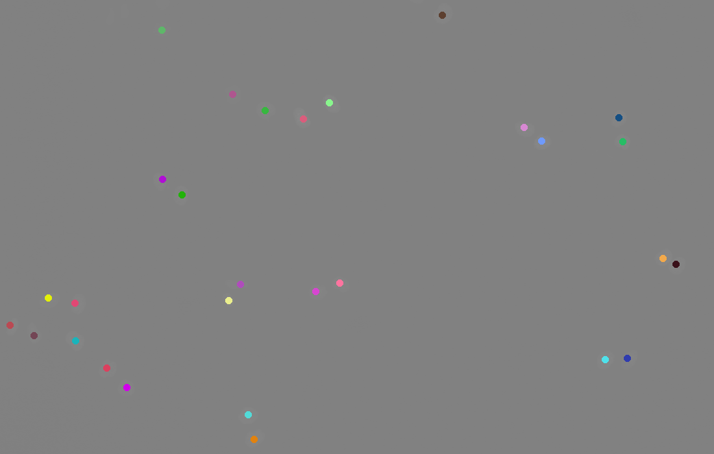

Models and automated cell tracking
I’ve always found it appealing, or rather enticing, to study biological systems from a more formal and mathematical perspective; with the main objective to somehow be able to describe them with equations rather than words. Equations are exact, definite, universal, but foremost, they are predictive. The alluring property of mathematical models is that they do not only provide a description of our system, but they are also responsive, we may ask “if I replace parameter X with parameter Y, what will my system look like?”.
Of course, our models - however beautiful or carefully constructed - are nothing but just that, models. And as the well known apohorism states, “all models are wrong”. While this statement is true, it is far from detrimental. Sometimes, being wrong but within a certain marginal of error to the truth is just about good enough. When driving, none of us knows the exact distance to the other cars, or how much a push on the gas will accelerate our car, still (most of the time) we manage to zig-zag through the densely packed lanes without crashing into each other - all from the simple incorrect model we constructed in our minds. So, yes - models are wrong, but they are most certainly useful and tremendously valuable in our quest to understand and analyze biological systems.
It was with this interest - and a requirement for PhD students at KTH to collect 60 ECTS credits - that I enrolled for a course in Applied Estimation. In short, the course focus on how to estimate states or parameters from noisy measurements such as empirical data. Albeit designed for people working with robotics, the concepts are indubitably applicable to biology - where noise is the rule rather than the exception.

As a part of the course, we had to devise our own project (where one estimation method was to used) and implement it in code. My choice fell upon a subject (and method) that I have little previous experience with: automated cell tracking in brightfield images, using GM-PHD (Gaussian Mixture Probability Hypothesis Density) filters. The theory is very interesting, and I was particularly intrigued by the concept of Random Finite Sets, here used to track multiple objects simultaneously. The method shares many similarities with the Kalman Filter, but rather than propagating a single state, the whole set is propagated in time. Easily explained, one might think of it as propagating a Gaussian Mixture in time, where each component represents a peak or cell. The original publication by Vo and Ma outlines the details of the GM-PHD filter better than I could ever attempt to, and I would refer anyone with an interest to have a close look at it.
As for the final product, I implemented the algorithm proposed by Vo and Ma (Table I-III) in python, with an easy to use CLI; allowing anyone who might want to try it out to do so fairly (I hope) seamlessly. Instructions and examples of usage can be found at the github page. The animated image above is the result of applying this implementation to a set of “HeLa cells stably expressing H2b-GFP”, downloaded from celltrackingchallenge.net. The implementation is far from perfect, and much work remains to even have a chance of competing with the more sophisticated alternatives. Still, for a couple of days of work, the performance is not too bad - and it was a fun experience implementing it.
The course has prompted a lot of new ideas and really allowed me to see some old
problems from a completely different lens. For example, I believe a lot of the
ideas found in SLAM (Simultaneous Localization and Mapping) could be used when
working with questions related to trajectory inferenc, where we partly want to
assess the developmental landscape but also map a path through it. It’s always a
very rewarding experience to enter a completely new field, where people come
from a very different background - in my opinion this intentional “push” out of
the comfort zone really has a tendency to spark great exciting ideas,
however uncofortable it feels at first.